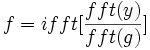

Schneller Algorithmus für die Entfaltung
Die Entfaltung wird mit einem schnellen Algorithmus durchgeführt, der auf dem Faltungstheorem basiert, das besagt, dass die Fourier-Transformation einer Faltung gleich dem Produkt der Fourier-Transformationen des Signals und der Antwort ist.
Angenommen y ist die bekannte Antwort und g ist das Signal. Dann wird die Entfaltung folgendermaßen berechnet:
